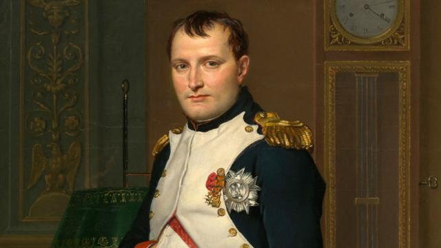

-----
Napoleon Bonaparte
Charlemagne

Jacques Chirac

Georges Clemenceau
SEJARAH
Hari ini 16 Oktober 1793, nama seorang perempuan tercatat selamanya dalam sejarah dunia khususnya Perancis. Nama perempuan itu adalah Marie Antoinette, ratu terakhir Perancis yang harus kehilangan nyawanya setelah dipenggal pisau guilottine. Marie Antoinette lahir pada 2 November 1755 di Vienna, Austria dengan nama Maria Antonia Josepha Joanna. Dia adalah anak ke-15 hasil pernikahan Ratu Austria Maria Theresa dan Kaisar Kekaisaran Suci Roma Franci I. Di masa kanak-kanaknya, Marie Antoinette menerima pendidikan ala bangsawan yang menekankan pada masalah keagamaan dan prinsip-prinsip moral. Baca: Hari Ini dalam Sejarah: Rakyat Perancis Serang Penjara Bastille Setelah Perang Tujuh Tahun (1756-1763) yang melibatkan negara-negara adikuasa Eropa masa itu, persekutuan Austria dan Perancis menjadi fokus utama Ratu Maria Theresa. Kala itu, memperkuat persekutuan lewat jalur pernikahan merupakan salah satu cara paling umum di kalangan para keluarga kerajaan di Eropa. Pada 1765, Louis Ferdinand, putra Raja Perancis Louis XV meninggal dunia. Akibatnya, putra Louis Ferdinand yang baru berusia 11 tahun, Louis-Auguste, menjadi pewaris tahta Perancis. Hanya dalam hitungan bulan, Marie Antoinette dan Louis-Auguste bertunangan atas nama aliansi kedua negara besar itu. Pada 1768, Louis XV berangkat ke Austria untuk memeriksa calon istri cucunya. Di sana, dia mendapati Marie Antoinette meski sangat cerdas tapi cenderung malas dan susah diatur. Saat itu, Marie Antoinette baru berusia 14 tahun, amat cantik dengan mata berwarna biru dan rambutnya yang pirang. Pada Mei 1770, menjelang usianya yang ke-15, Marie Antoinette berangkat ke Perancis untuk menikah. Keberangkatannya diiringi 57 kereta kuda, 117 pengawal, dan 376 ekor kuda.
Napoleon Bonaparte
Charlemagne
Jacques Chirac
Georges Clemenceau
Wisata
Bonjour! Selamat datang di Perancis, negara teritori metropolitan di Eropa Barat, berbatasan dengan Belgia, Luksemburg, Jerman, Swiss, Italia, Monako, Andorra dan Spanyol. Selain terkenal dengan seni, mode dan penghasil wine terbaik di dunia, Perancis juga mempunyai banyak tempat wisata yang wajib untuk dikunjungi
Eiffel Tower
Museum Louvre
Arc The Triomphe

Saint-Malo